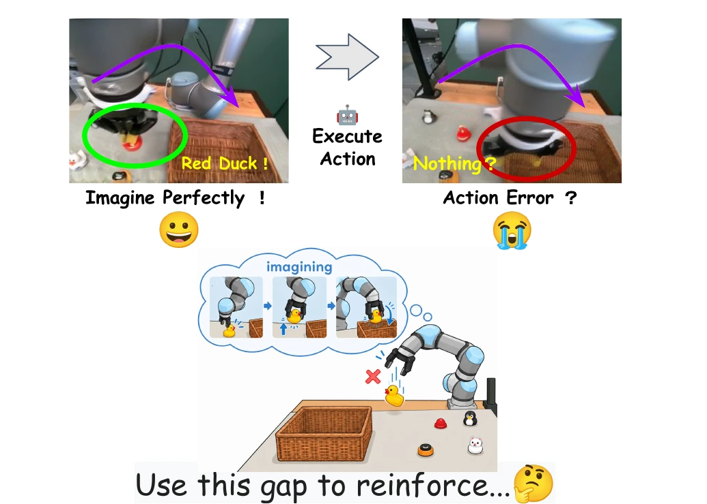
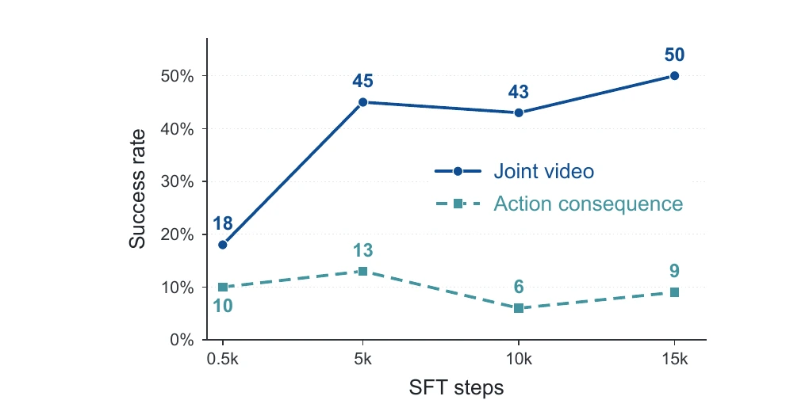
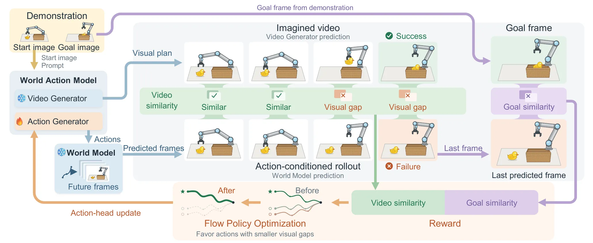
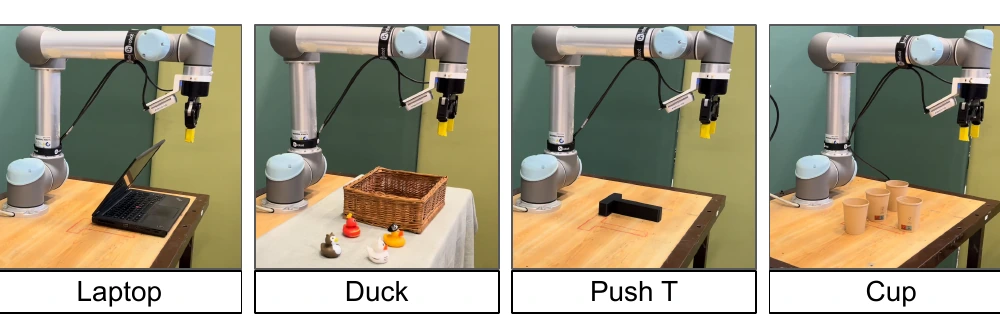
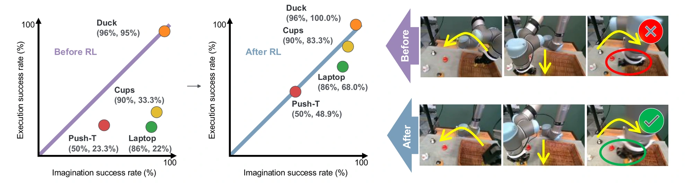
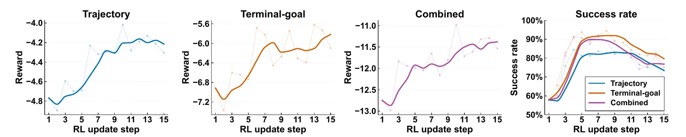
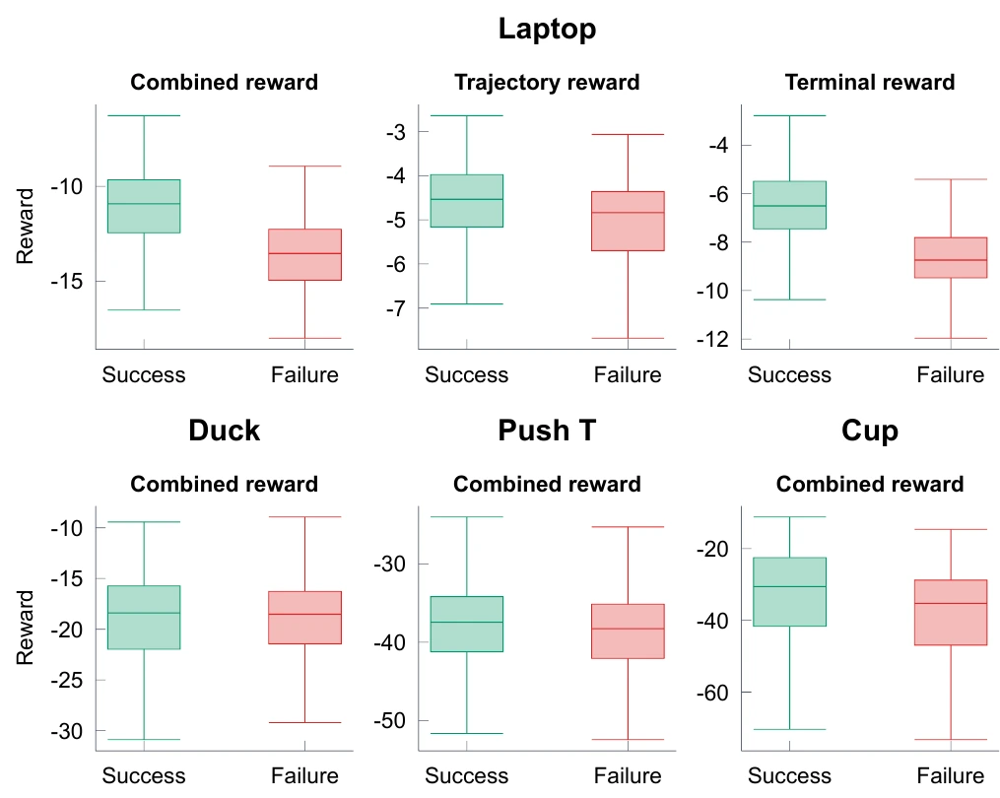
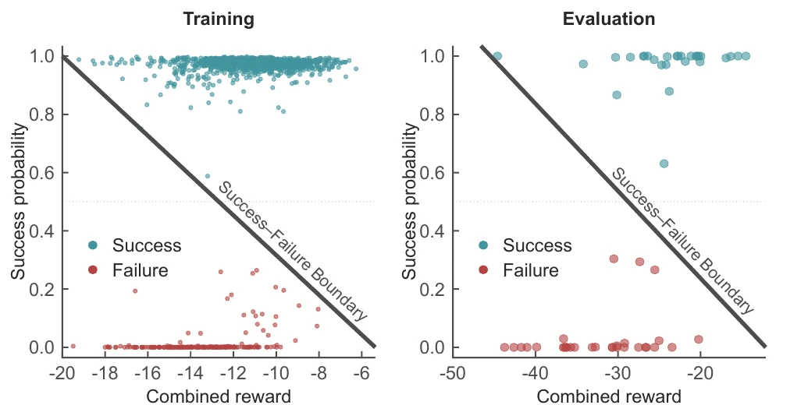

Use the model’s visual plan
The world-action model jointly produces a future video and an action chunk from the current observation and instruction.
WORLD-MODEL FEEDBACK FOR ROBOT POLICIES
A robot can imagine success before it can act reliably.
We turn that gap into a training signal — with no online robot interaction and no task-specific reward model.

THE IDEA
World-action models jointly predict future visual trajectories and robot actions, yet what they imagine can differ substantially from what their actions achieve. We observe that these models can imagine successful task completion before learning reliable actions.
We treat the imagined video as a goal-conditioned visual plan rather than a directly executable one. A frozen, action-conditioned world model predicts the consequences of the proposed actions. Feedback combines trajectory consistency between the two predictions with terminal-goal alignment, and Flow Policy Optimization updates only the action head. This requires neither online robot interaction during post-training nor a separately trained task-specific reward model.
Across four real-world UR5 manipulation tasks, the method raises mean success from 43.4% to 75.1%, compared with 61.4% for π0.5. The results suggest that cross-model prediction discrepancy can provide useful feedback for improving robot policies.
Mean real-robot success after RL
Improvement over SFT initialization
Model-space gap the feedback exploits
SEE IT END TO END
From the imagination–consequence gap to the four real-robot tasks.
METHOD
Imagine a trajectory. Predict its consequences. Learn from the difference.

As supervised fine-tuning proceeds, the imagined video increasingly depicts task completion, rising from 18% to 50%. The consequences predicted from the action chunks generated alongside it stay at 6–13% throughout.
Both scores come from the same classifier and the same initial states, so the 41-point gap at 15k steps reflects inconsistency between two model-generated predictions rather than a difference in evaluation protocol. That discrepancy is what the feedback signal measures.

The world-action model jointly produces a future video and an action chunk from the current observation and instruction.
A frozen action-conditioned world model predicts the consequences of those actions and supplies the next observation, closing the rollout.
Flow Policy Optimization turns group-relative feedback into an update to the action head, retaining the native UniPC sampler.
Frames are selected at matching timestamps from the imagined video and the action-conditioned rollout, and compared at matching resolution. The reward is the negative pixel MSE averaged over views — it constrains agreement along the predicted evolution.
The world model’s final predicted frame is compared with a predefined visual goal reference for the task, preprocessed identically. This term applies at the final chunk and encourages progress toward the desired outcome.
Both predictive models stay frozen during optimization, so the policy cannot raise its reward by changing the models that produce it — only by changing its actions.
REAL-WORLD DEMONSTRATIONS
Four manipulation tasks on a UR5. Compare our policy before and after RL against the π0.5 baseline.

Accelerated recordings of the post-training policy. The speed factor is not specified; use the side-by-side comparison above for timing.
QUANTITATIVE EVALUATION
Real-robot success rates over the four UR5 manipulation tasks.
| Method | Laptop | Duck | Push-T | Cup | Avg. |
|---|---|---|---|---|---|
| Ours (SFT) | 22.0 | 95.0 | 23.3 | 33.3 | 43.4 |
| Fast-WAM | 16.0 | 0.0 | 0.0 | 0.0 | 4.0 |
| VLA-JEPA | 15.0 | 20.0 | 0.0 | 0.0 | 8.8 |
| π0.5 | 56.7 | 85.0 | 33.3 | 70.6 | 61.4 |
| Ours (RL) | 68.0 | 100.0 | 48.9 | 83.3 | 75.1 |
Post-training raises mean success from 43.4% to 75.1%, a gain of 31.7 percentage points over the SFT initialization and 13.7 points over the strongest baseline, π0.5.
Fast-WAM and VLA-JEPA were developed with substantially larger adaptation budgets than the 40–200 demonstrations per task available here, so their low scores indicate that the low-data regime is difficult rather than an inherent limitation of either method.

| Task | Method | n | Time (s) ↓ | Median | Steps ↓ | Median |
|---|---|---|---|---|---|---|
| Laptop | SFT | 11 | 46.1 | 40.8 | 123.6 | 113 |
| RL | 34 | 41.4 | 39.7 | 111.4 | 107 | |
| Duck | SFT | 57 | 63.5 | 54.1 | 200.0 | 160 |
| RL | 60 | 56.7 | 54.2 | 170.7 | 160 | |
| Push-T | SFT | 21 | 131.6 | 124.4 | 289.3 | 279 |
| RL | 44 | 123.7 | 121.9 | 278.3 | 272 | |
| Cup | SFT | 10 | 206.0 | 196.7 | 667.6 | 632 |
| RL | 25 | 171.3 | 173.4 | 500.0 | 496 |
Mean completion time and control step count decrease on all four tasks. Medians follow the same trend except on duck, where they are essentially unchanged — there the mean reduction comes from fewer long, hesitant trials rather than a uniformly faster policy.
ANALYSIS
Ablations on the reward composition, and how the feedback relates to predicted success.

Trajectory feedback constrains consistency during the intermediate predicted evolution, whereas terminal feedback focuses on the final predicted goal state. Combining feedback from both the process and the endpoint yields a more comprehensive optimization signal.
Successful rollouts concentrate at high predicted success probability and at the upper end of the reward range, with failures at the opposite corner and similar separation in the training and evaluation splits.


PAPER & SUPPLEMENTARY MATERIAL
Learning to Align Actions with Visual Plans
Read the paperA citation entry will be added once the submission is de-anonymized.